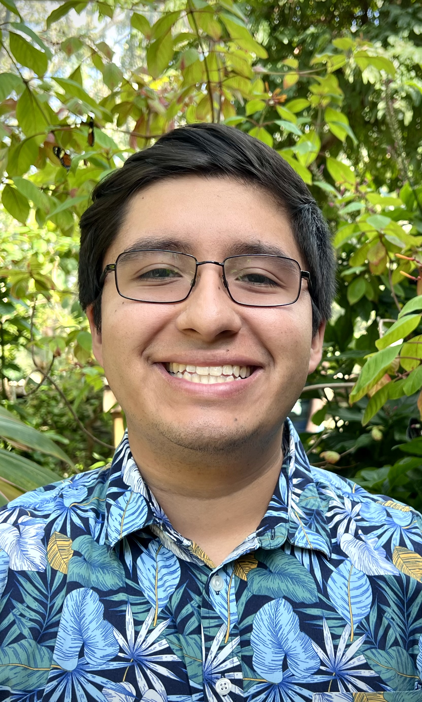

Isaiah Martinez | Home <!-- this is what displays on the tab in your browser -->
Home
|
Teaching
|
Research
|
Conferences
|
Talks
Isaiah A. Martinez

I'm Isaiah, a third year mathematics PhD student at the
University of Nebraska – Lincoln
advised by
Mark Walker
. Broadly speaking, my research interests lie in homological and derived category methods in commutative algebra.
Before UNL, I was an undergrad at
UCSB
and then a
BAMM! scholar
at
Fresno State
, where I worked on Khovanov homology under the supervision of
Carmen Caprau
.
email: imartinez12 @ unl.edu | Office: 241 Avery Hall